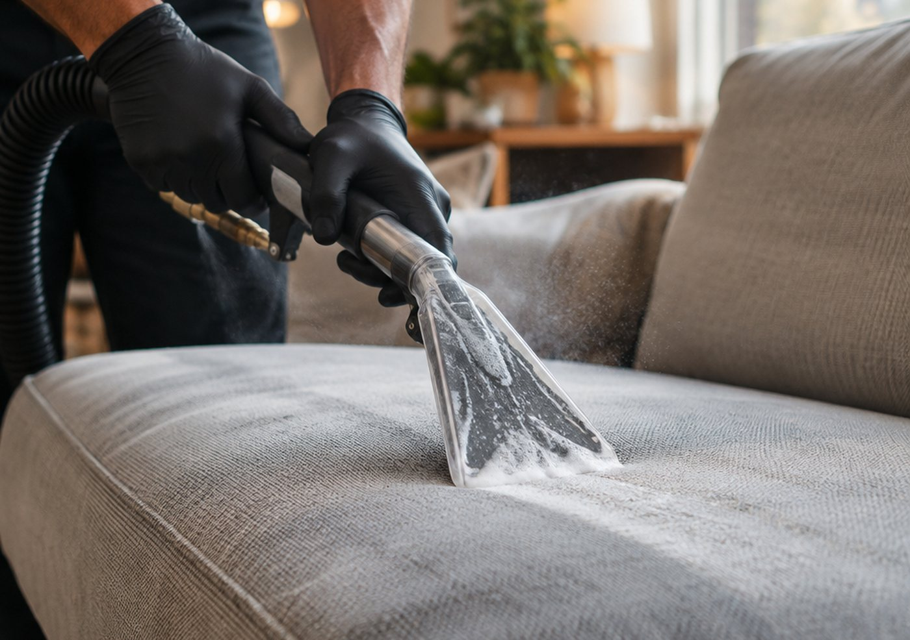
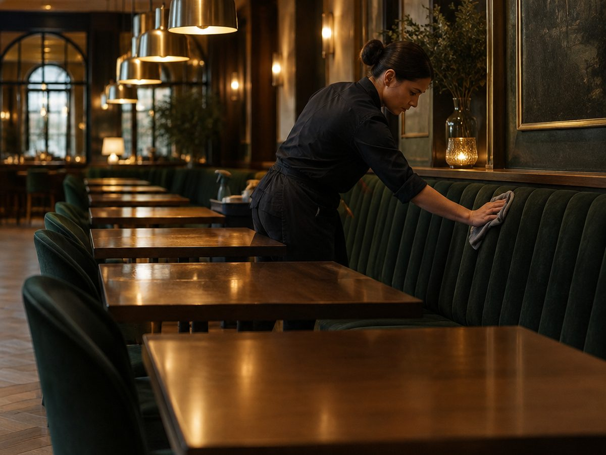

Мягкая мебель 01
Диваны, кресла, стулья, изголовья кроватей и матрасы. Пятна, засаленность, следы от животных и запахи.
Диваны, кресла, матрасы и ковры на дому. Экстракторная чистка профессиональными средствами: без разводов, липкости и запаха. Для кафе, ресторанов и кинотеатров — по договору.
Минск и пригород · выезд в удобное время · предварительная цена до начала работ

Минск · Московский районРаботаем и с одной квартирой, и с объектом на сотню посадочных мест. Цену считаем до выезда — по фото и объёму.
Диваны, кресла, стулья, изголовья кроватей и матрасы. Пятна, засаленность, следы от животных и запахи.

Чистка на месте с вымыванием грязи из ворса. Убираем пыль, песок, пятна и застарелые следы пролитого.

Рестораны, кафе, кальянные, кинотеатры: диваны, банкетки, кресла в залах. Работаем до открытия или ночью.
Никакой «пены сверху и ушли»: пыль вытягиваем, средство вымываем, ворс оставляем сухим настолько, насколько это возможно.
Смотрим ткань, тип загрязнений и пробуем средство на незаметном участке.
Пылесосим пыль, крошки, шерсть и песок — то, что при намокании превращается в грязь.
Наносим средство под тип ткани и загрязнения, даём ему отработать, не давая высохнуть.
Вымываем грязь и остатки средства, проходим ворс щёткой, чтобы не было разводов.
Ускоряем сушку, показываем результат и объясняем, что делать дальше.
 экстрактор · чистка на дому
экстрактор · чистка на дому
Если почистить диван «шампунем из баллона», часть средства остаётся в ворсе. Через неделю на этом месте снова липко, а грязь притягивается быстрее, чем до чистки.
Экстрактор забирает грязную воду вместе с песком, пылью и остатками средства. Поэтому обивка становится не только светлее, но и чище по факту: мягче на ощупь и без химического запаха.
В зале, где каждый день садятся гости, обивка впитывает всё: запах табака и кальяна, жир, пролитое вино и кофе. Оттирать это тряпкой бессмысленно — нужна чистка с вымыванием.
Работаем до открытия, после закрытия или ночью, чтобы не останавливать зал. Для организаций — договор, фиксированные сроки и закрывающие документы.
Цена зависит от размера, типа ткани и загрязнений. Пришлите фото дивана в WhatsApp — назову стоимость до выезда, чтобы не было сюрпризов на месте. Оплата после работы.
Зависит от ткани, набивки и проветривания помещения. После экстрактора мебель остаётся влажной на ощупь и досыхает в течение нескольких часов. Для ускорения используем вентилятор и открытые окна.
Большинство бытовых пятен уходит. Но есть следы, которые «въелись» в волокно или испортили краситель: старые чернила, краска, некоторые виды отбеливателей. Честно скажу до начала работы, что получится, а что нет.
Используем профессиональные средства и вымываем их экстрактором, а не оставляем в ворсе. После высыхания мебель можно использовать как обычно. О своих аллергиях и особенностях лучше сказать заранее.
Освободите доступ к мебели, уберите с неё вещи и пледы, при возможности — освободите место для оборудования. Всё остальное (вода, электричество, средства, техника) привозим сами.
Фото дивана или ковра, район и удобное время. Посчитаю стоимость до выезда, а не «на глаз» на месте.
+375 (29) 501-76-04Имя, телефон и что нужно почистить — перезвоню и назову цену.